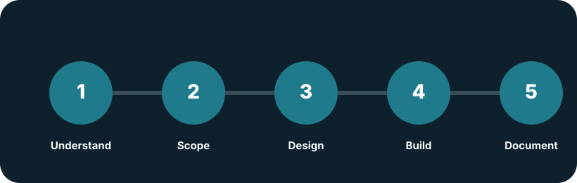

Approach
Small, understandable steps lead to stronger systems.
SASD prefers realistic project scopes, clear decisions and maintainable implementation work. The aim is not to impress with complexity, but to deliver systems that can survive everyday operation.
A practical delivery model.
The exact process depends on the project, but the basic pattern is deliberately simple.
-
Understand the actual problem
Clarify goals, constraints, risks, users and operational reality before choosing technologies.
-
Define a realistic MVP
Reduce the first version to the smallest useful solution that can be built, tested and operated responsibly.
-
Design for maintainability
Create a project structure, data model and architecture that remain understandable when the project grows.
-
Implement in transparent increments
Build in manageable steps, keep documentation close to the code and make important decisions traceable.
-
Document operation and next steps
Provide practical notes for deployment, configuration, maintenance, known limitations and future improvements.
